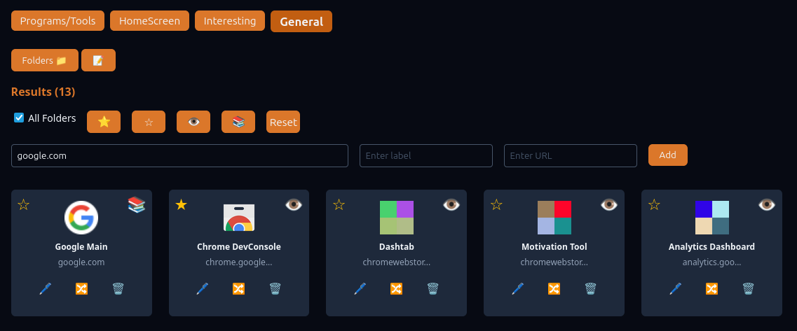

Key Features
Advanced Bookmark Manager
Easily add, edit, organize, and access your essential websites with customizable folders.

Integrated Search
Quickly find bookmarks and folders with a search that scans both labels and URLs. Categorize and find using filters.
Minimalist To-Do List
Manage tasks efficiently—add, complete, and reorder them to boost your productivity.